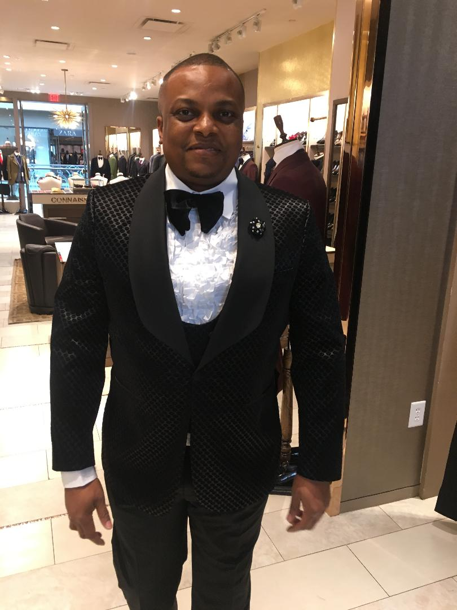

About Me
My name is Ugochinyere Anazodo,am a Full-Stack Developer from Atlanta Ga. I enjoy taking complex problems and turning them into simple and beautiful interface designs. I like the logic and structure of coding and i strive to write elegant and efficient code whether it be HTML,CSS or JQuery. When i'm not coding or purchasing Pixels you will find me in the gym or soccer games.
I am also a seasoned business man and CEO of Spring Berry Investment LLC with over 13yrs experience in Sales,marketing and real estate Investment.Our activities are concentrated in the areas of Investment projects & structured financing,corporate visioning , strategic planning,mergers & acquisitions,business processes and organization design.
Other areas of my expertise include post merger & acquisition, balanced scorecard, Risk management, financial and budget planning, quality assurance, value realization,Human resource management ,Technology Implementation, business integration,expert negotiator and take over strategist. Certfied Strategic Planner from Cranfield school of management,UK and LLB Hons from National Open University in Nigeria. I have served in board of several bluechip companies.
I have an executive management programme(MBA) in Organization Strategic management & Majoring in Finance.Attended several seminars on leadership,management ,business law ,energy trading,business processes,cash flow management,peak performance management,change manangement,credit marketing and sales skills as well as product and brand management . My wealth of experience has been major plus to the establishment and growth of spring berry investment llc.I am married and with 2 kids.